Факел Torch —представляет собой простейший источник света. Вокруг факела создаётся освещённая область. Факел можно как носить в руках, так и устанавливать практически на любой поверхности, в том числе и на фоновые стены. Если разбить под факелом опору, он упадёт. Вода гасит все установленные факелы, кроме проклятого и ихорового, при контакте. Его можно выкинуть, и он будет светиться.
Разновидности факелов
Синий факел (Blue Torch) (ID:427) — Создаётся из 3 факелов и одного сапфира.
Красный факел (Red Torch) (ID:428) — Создаётся из 3 факелов и одного рубина.
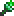Зелёный факел (Green Torch) (ID:429) — Создаётся из 3 факелов и одного изумруда.
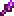Фиолетовый факел (Purple Torch) (ID:430) — Создаётся из 3 факелов и одного аметиста.
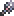Фиолетовый факел (White Torch) (ID:431) — Создаётся из 3 факелов и одного алмаза.
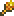Жёлтый факел (Green Torch) (ID:432) — Создаётся из 3 факелов и одного топаза.
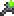Проклятый факел (Cursed Torch) (ID:523) — создаётся из 33 факелов и одного проклятого пламени. Горит под водой.
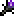Демонический факел (Demon Torch) (ID:433) — Создается из 3 факелов и одного обсидиана. Также можно найти в башнях в аду. С версии 1.2. изменился спрайт. Раньше в мобильной версии данными факелами освещался тоннель в Громадное дерево.
Ледяной факел (Ice Torch) (ID:974) — Создается из 3 факелов и одного льда.
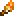Оранжевый факел (Ice Torch) (ID:1245) — Создается из 3 факелов и одного янтаря.
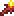Факел ихора (Ichor Torch) (ID:1333) — Создаётся из 33 факелов и одного ихора. Так же как и проклятый факел, горит под водой.
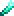Сверхяркий факел (Ultrabright Torch) (ID:2274) — Покупается у странствующего торговца за 3 серебрянные монеты. По радиусу и силе света он превосходит обычный факел в три раза.
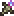Костяной факел (Bone Torch) (ID:3004) — Покупается у скелета-торговца за 1 серебрянную монету
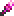Розовый факел (Pink Torch) (ID:3114) — Создается из 1 дерева и одной розовой слизи.
Радужный факел (Rainbow Torch) (ID:3045) — Создается из 3 факелов и одного радужного кирпича.